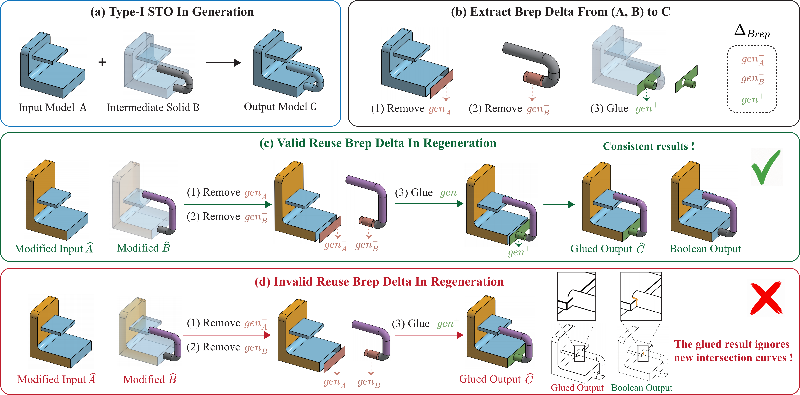
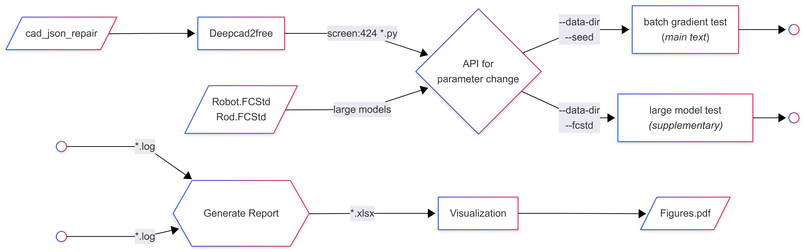
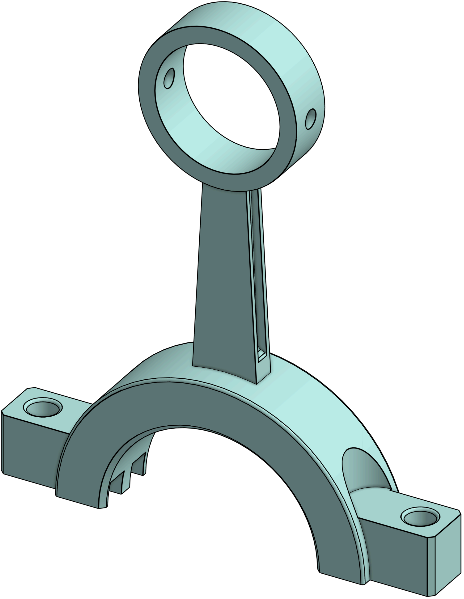
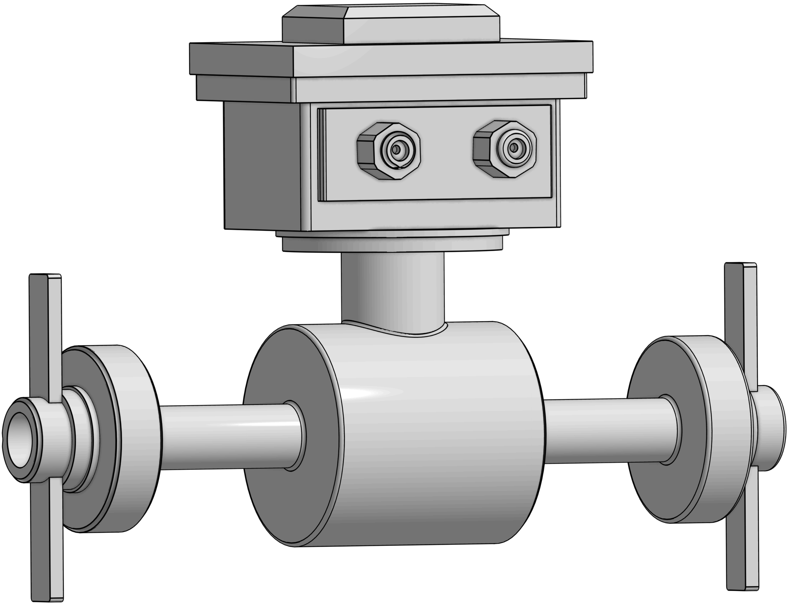
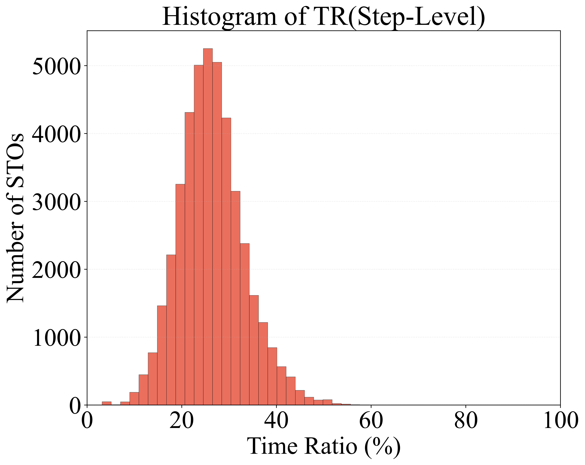
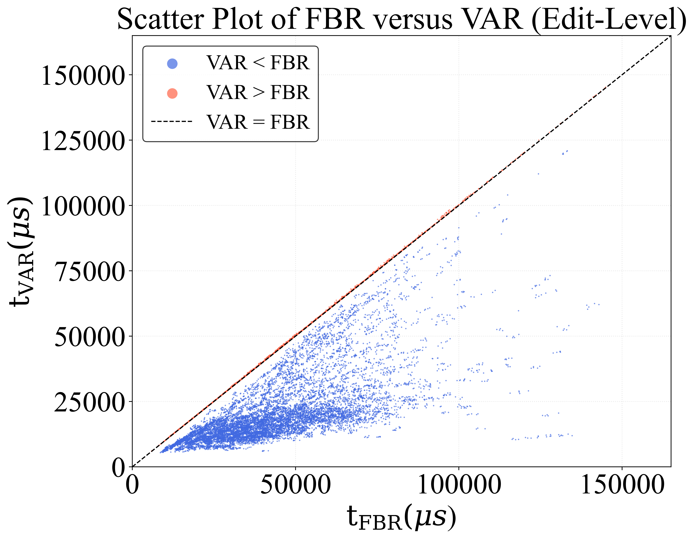
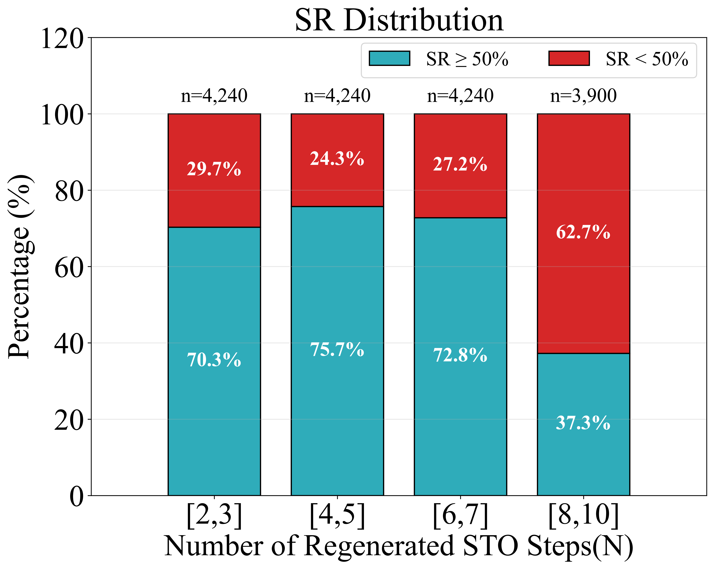
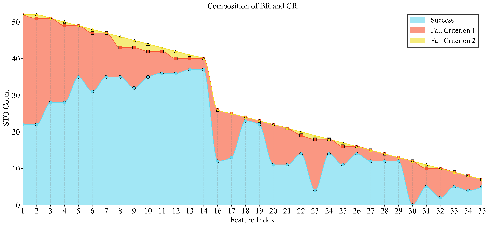
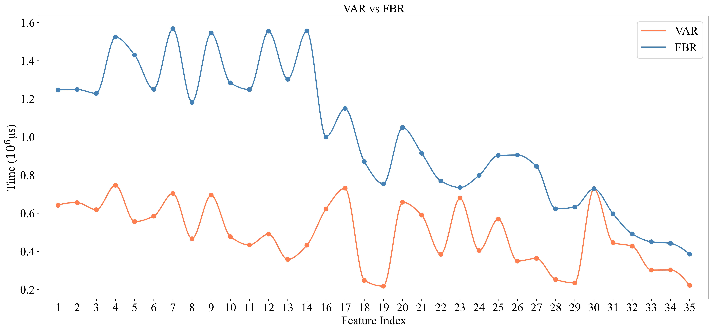

Feature-based parametric modeling remains the primary approach for product modeling. It represents model construction as a sequence of parameterized features and re-executes the sequence whenever the parameters are modified, a procedure known as regeneration. Regeneration is triggered frequently during model editing, making its efficiency crucial in product design.
Despite its practical significance, regeneration has received limited attention in the academic literature. Moreover, existing criteria for determining reusable previously computed data for regeneration may lead to incorrect results, making validity crucial. Yet validity is rarely discussed or theoretically justified in prior regeneration methods.
In this work, we present a validity-assured method that accelerates regeneration. Specifically, we
Our method, Validity-Assured Regeneration (VAR), accelerates the regeneration process by recording B-rep deltas during the initial generation and reusing them during regeneration. When a feature-parameter change is local, many downstream B-rep faces remain unchanged and can be directly reused through a gluing-based regeneration (GR) step instead of being recomputed by an expensive Boolean operation.
We introduce two locality criteria that determine whether a stored B-rep delta can be safely reused.
When both criteria are satisfied, our method reuses the stored faces through a gluing operation. When either criterion fails, the method falls back to full recomputation, ensuring that the regenerated result is always consistent with what a full regeneration would produce.


In the paper, we evaluate our method on the DeepCAD dataset. Each Json model is first converted into an executable FreeCAD Python script; the dataset is then filtered to keep only the models that
The filtering leaves 424 valid parametric models. For each model, every feature (except the last one) is randomly modified five times by scaling its parameter value into the range [0.1, 1.9]; the runtimes of both validity-assured regeneration (VAR) and full Boolean regeneration (FBR) are recorded for every experiment.
Models used in the experiments (a subset of the 424 filtered models).
Excluded models (a subset), e.g. multi-part, multi-loop, or invalid models.
To complement the dataset-based evaluation, the supplementary material additionally tests two larger, hand-built models with much longer modeling histories:

The rod model (37 STO steps).

The robot model (53 STO steps).
We report three metrics. The step-level time ratio TRj = tVAR,j / tBR,j × 100% measures the cost of one regenerated STO step under VAR relative to a Boolean regeneration (BR); it is reported only for steps where both criteria are satisfied and GR is applied. The global time ratio TRglobal = tVAR / tFBR × 100% compares the total VAR runtime with the FBR baseline over all regenerated steps of one parameter-modification experiment. The saving ratio SR = NGR / N × 100% is the fraction of regenerated STO steps in which VAR replaces the Boolean operation with gluing.
Across all evaluation models, successful GR steps take on average only 26.37% of the Boolean time, a substantial speedup over BR. In 25.76% of the modification experiments the global time ratio exceeds 100%, typically by a small margin: the locality criteria are still evaluated at nearly every regenerated step even when GR is rarely triggered, adding a checking overhead on top of the BR fallback.

Distribution of the step-level time ratio TRj over all successfully regenerated STO steps of all parameter-modification experiments.

Edit-level runtimes: each point is one parameter-modification experiment (tFBR vs. tVAR). Blue points (below the diagonal) are speeded up by VAR; red points are the cases where VAR incurs a slightly higher cost.

Distribution of the saving ratio SR, grouped by the number of regenerated STO steps: the share of experiments with SR ≥ 50% versus SR < 50%.
For the larger robot model from the supplementary material, the following two figures show, for each modified feature, how the regenerated downstream steps are handled and how the total regeneration time compares between VAR and FBR.

For each modified feature, the number of regenerated downstream STO steps handled by GR (success) versus those falling back to BR (Criterion 1 or Criterion 2 failure).

Total regeneration time of VAR and FBR as each feature of the robot model is modified. VAR stays below FBR throughout the feature history, and the two converge as the modified feature approaches the end of the history.
If you find this work helpful, please consider citing:
@inproceedings{chen2026validityassured,
author = {Chen, Zehao and Zheng, Zihe and Lu, Yang and Feng, Yushan and Li, Jialin and Chen, Cong and Liu, Ligang},
title = {Validity-Assured Regeneration of Parametric Solid Modeling},
booktitle = {SIGGRAPH Asia},
year = {2026},
doi = {10.1145/3829340.3842251}
}
We thank the DeepCAD and FreeCAD communities for their open-source contributions. Some of the models shown in our experimental figures are from the public Onshape model library.